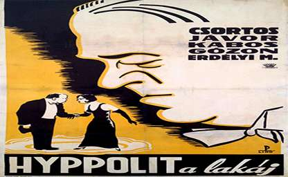
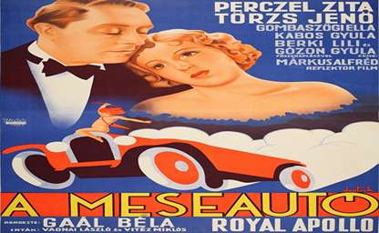
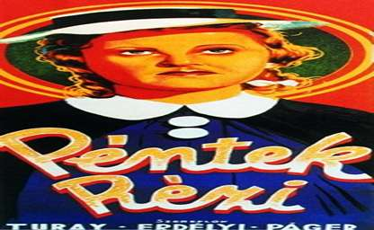
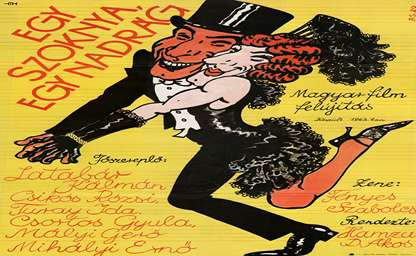
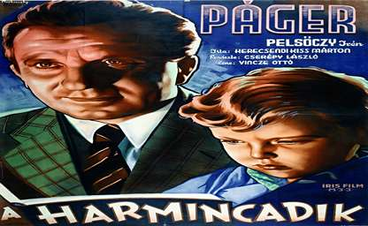
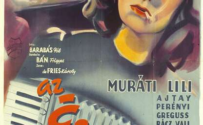

Hyppolit, a lakáj (1931)
Rendező: Székely István. Az első magyar hangosfilm egyik legnépszerűbb darabja, amely humorával és színészi alakításaival vált örök klasszikussá.

Meseautó (1934)
Rendező: Gaál Béla. Romantikus vígjáték, amely máig a magyar filmgyártás egyik legismertebb darabja.

Péntek Rézi (1938)
Rendező: Székely István. Egy romantikus vígjáték, amely a korabeli Magyarország vidéki életét és társadalmi viszonyait mutatja be egy szórakoztató történeten keresztül.

Egy szoknya, egy nadrág (1943)
Rendező: Hamza D. Ákos. Népszerű vígjáték, amely később is sok feldolgozást inspirált.

A harmincadik (1942)
Rendező: Tóth Endre (később André de Toth). Egy fordulatos és érzelmekkel teli történet, amely a korabeli közönség egyik kedvence volt.

Az éjszaka lánya (1942)
Rendező: Hamza D. Ákos. A film a korszak egyik emlékezetes alkotása, tele romantikával, drámával és a korabeli Budapest pezsgő éjszakai életének atmoszférájával.